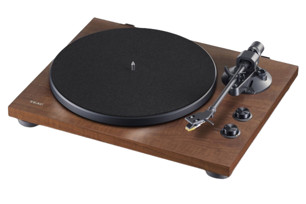

It's not just Machine
It's classic
스피커 분야에서 다년간 시장 점유율 1위를 달리고 있는 국내 대표 스피커 Britz 입니다. 1997년 10월에 설립된 저희 브리츠인터내셔널은 2채널 스피커에서 5.1 채널 스피커까지 다양한 스피커군을 통해 일반 유저에서 매니아까지 고객의 귀와 마음을 사로잡고 있는 브리츠 스피커는 국내뿐만 아니라 해외로 나아가 전세계인의 귀와 마음을 사로잡는 명실상부한 스피커의 대명사가 되도록 노력 하겠습니다.
Learn more
